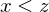
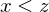
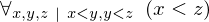
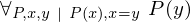
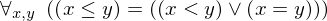

Show the Proof¶
In [1]:
import proveit
# Automation is not needed when only showing a stored proof:
proveit.defaults.automation = False # This will speed things up.
proveit.defaults.inline_pngs = False # Makes files smaller.
%show_proof
Out[1]:
| step type | requirements | statement | ||
|---|---|---|---|---|
| 0 | instantiation | 1, 2, 3, 4, 5, 6 | ,  ⊢  ⊢  | |
 : , : ,  : , : ,  : : | ||||
| 1 | theorem | ⊢  | ||
| proveit.logic.booleans.disjunction.singular_constructive_dilemma | ||||
| 2 | instantiation | 7, 9 | ⊢ | |
| : , : | ||||
| 3 | instantiation | 8, 9 | ⊢ | |
| : , : | ||||
| 4 | reference | 14 | ⊢ | |
| 5 | deduction | 10 | ⊢ | |
| 6 | deduction | 11 | ⊢ | |
| 7 | axiom | ⊢  | ||
| proveit.logic.booleans.disjunction.left_in_bool | ||||
| 8 | axiom | ⊢  | ||
| proveit.logic.booleans.disjunction.right_in_bool | ||||
| 9 | instantiation | 12, 13, 14 | ⊢ | |
 : :  , ,  : : | ||||
| 10 | instantiation | 15, 18, 16 | , ⊢ | |
: ,  : , : ,  : : | ||||
| 11 | instantiation | 17, 18, 19 | , ⊢ | |
| : , : , : | ||||
| 12 | theorem | ⊢  | ||
| proveit.logic.equality.substitute_truth | ||||
| 13 | theorem | ⊢  | ||
| proveit.logic.booleans.true_is_bool | ||||
| 14 | instantiation | 20, 21, 22 | ⊢ | |
 : , : ,  : : | ||||
| 15 | axiom | ⊢  | ||
| proveit.numbers.ordering.transitivity_less_less | ||||
| 16 | assumption | ⊢ | ||
| 17 | theorem | ⊢  | ||
| proveit.logic.equality.sub_right_side_into | ||||
| 18 | assumption | ⊢ | ||
| 19 | assumption | ⊢ | ||
| 20 | theorem | ⊢  | ||
| proveit.logic.equality.rhs_via_equality | ||||
| 21 | assumption | ⊢ | ||
| 22 | instantiation | 23 | ⊢ | |
| : , : | ||||
| 23 | axiom | ⊢  | ||
| proveit.numbers.ordering.less_eq_def | ||||